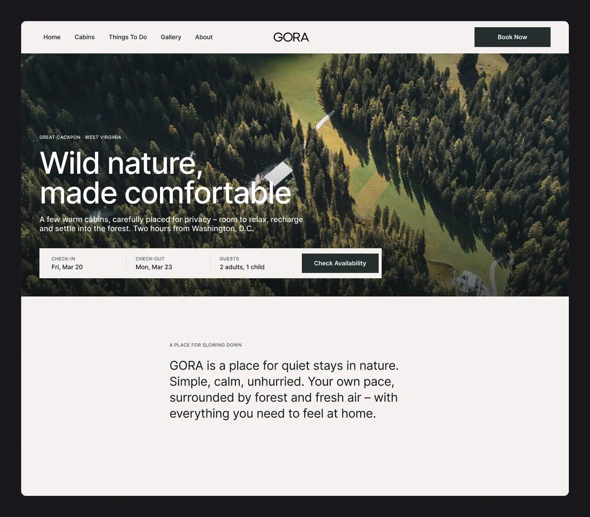
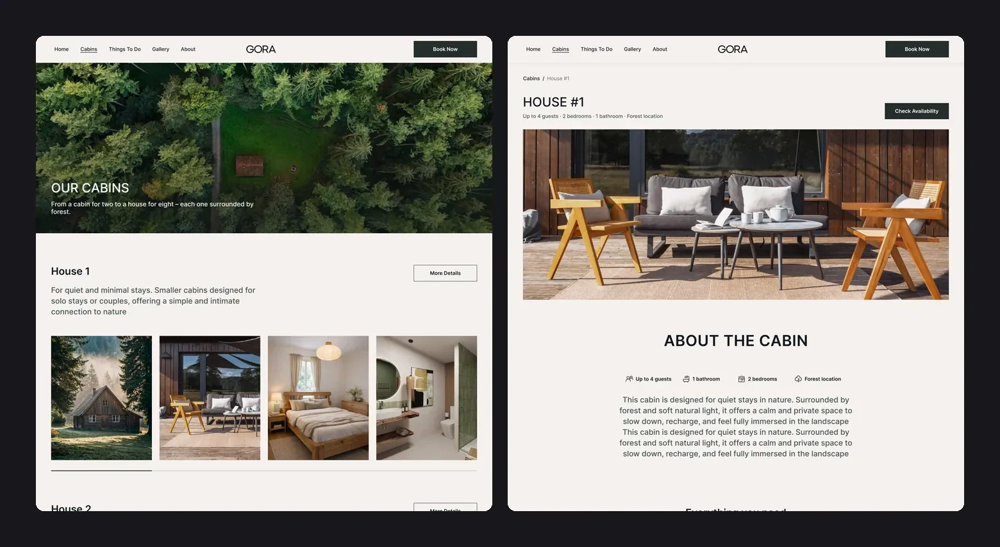
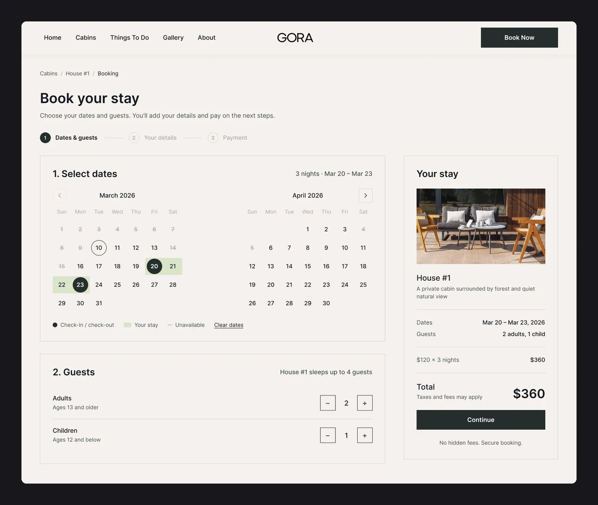
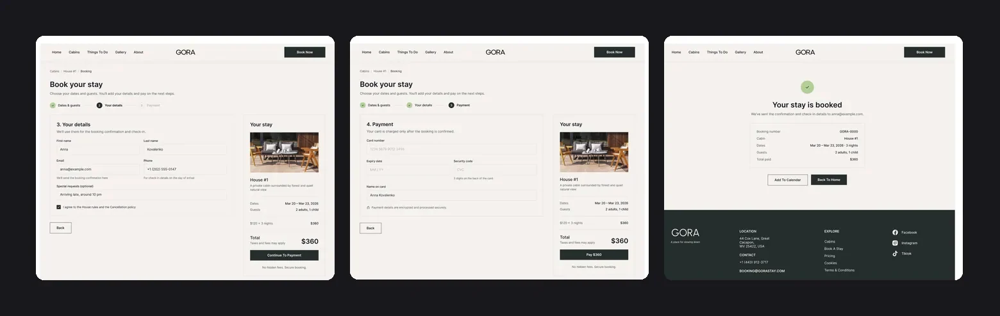
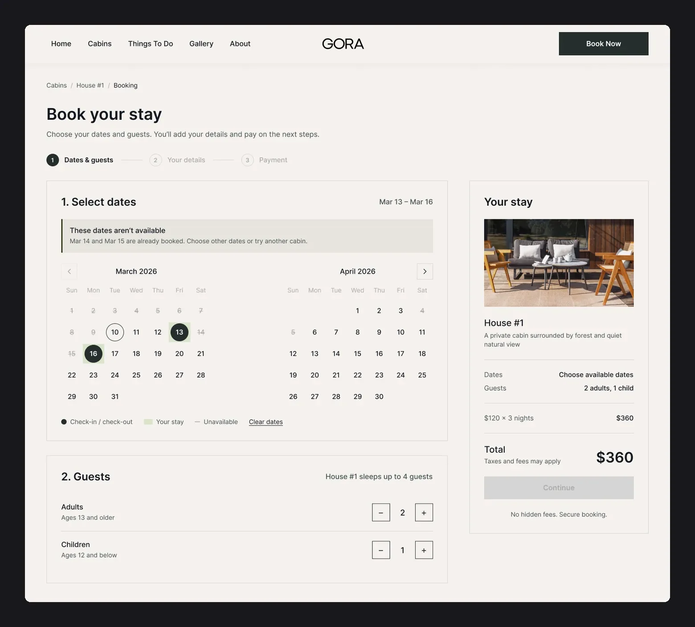
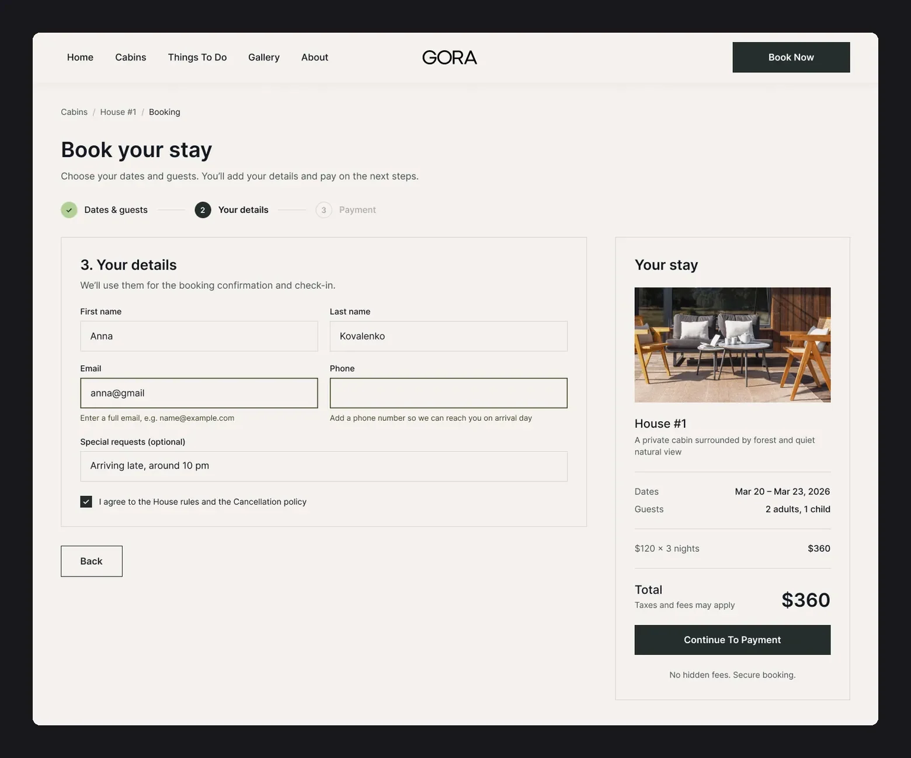
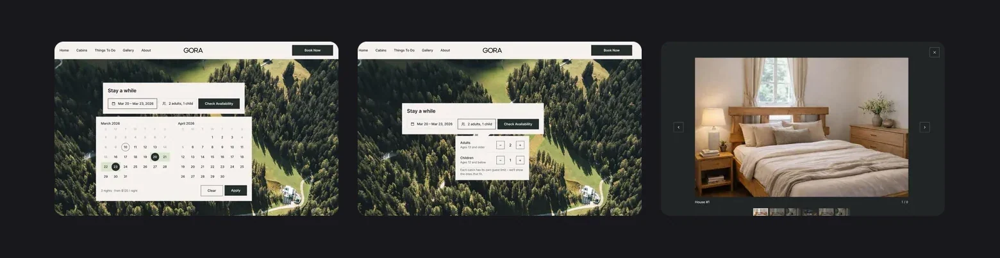
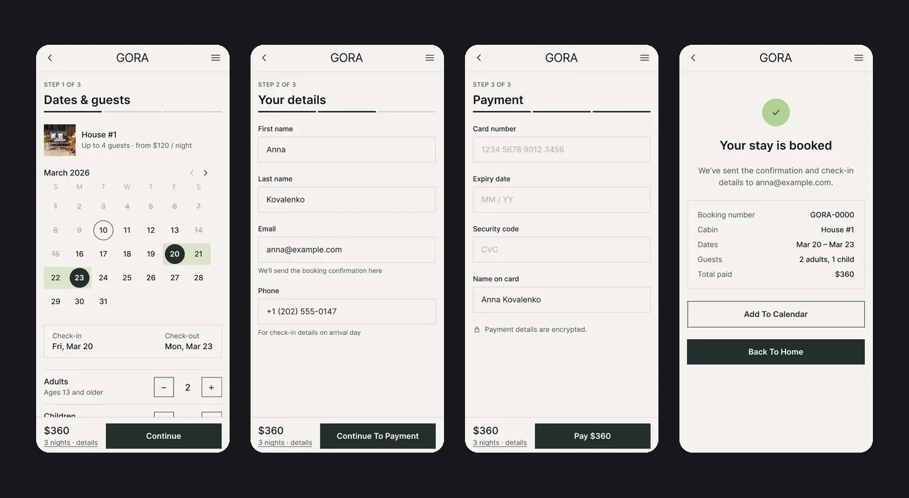

The owners are renovating the cabins left by the previous owner and putting up new ones. The site was needed to show the place to investors and start taking the first bookings. The cabins differ: one is for two people, another gets a hot tub or a banya, and the new ones will all be the same. At the start there were no names, photos or texts.
Brief and references
The client shared websites he likes: AutoCamp, Hinter, Our Habitas, Unyoked, Ziedlejas, Slowhop, Lumen, Treehotel. They added up to a list of what mattered to him:
- atmosphere first, information second;
- nature bigger than the interface, one strong visual anchor;
- booking on the first screen, but not pushy;
- the booking button always within reach;
- a wide, full-screen layout.
The palette came from the renovation moodboard – wall and furniture colours. The client warned right away that he didn’t know how these tones would look on screen.
Booking from the first screen, but quietly
- Why
- The brief asked for booking on the first screen without hard selling, and a booking button always within reach.
- What I did
- The first screen is a forest shot with a slim booking bar at the bottom: check-in, check-out, guests, «Check availability». The cabin page has a «Check availability» button next to its name, and «Book Now» sits in the header of every page.
- Result
- Dates can be checked right away without hunting for the booking, while the forest stays the main thing on screen.

A structure for cabins that don’t exist yet
- Why
- The cabins differ in size and extras, some were still being renovated, and there were no names or photos.
- What I did
- A catalogue where every cabin is the same block: name, short description, four photos and «More Details». The cabin page has key facts (guests, bathroom, bedrooms, location), a description, amenities as icons and a gallery. Until names were chosen – numbering House #1…#7, as the client asked.
- Result
- A new cabin means a new block in the catalogue and a new page from the same template, without rebuilding the site.

Booking: the summary always in view
- Why
- Booking is the main action on the site. People need to see exactly what they are booking and for how much before paying.
- What I did
- A separate page with Cabins / House #1 / Booking breadcrumbs and two steps: dates in a two-month calendar and the number of adults and children. On the right, a «Your stay» panel: photo, price per night, dates, guests, total for all nights, «Continue Booking» and «No hidden fees».
- Result
- The first version of the site books through Lodgify, so this flow is still waiting for its integration.

Handoff to development
Before the Webflow build I prepared the page structure, styles and components so the build would go faster, stay consistent and avoid extra rounds of fixes. The client picked the heading typeface from several options I proposed, and I delivered the logo as vector outlines.
The work was split into stages: design, a working site for investors, content, integrations. The site was built in Webflow with booking through Lodgify and went live at gorastay.com in July 2026.
Second iteration – concept
The first version is live on gorastay.com. After launch I went back to the designs and finished what was left rough: the rest of the flow, the states and the mobile version. This is a concept – it isn’t in production yet. The screens above already include these changes.
Booking: three steps and a confirmation
I rebuilt the calendar from components instead of an image: check-in, check-out, range, today, unavailable days. Then come guest details, payment and confirmation. The «Your stay» summary sits on the grid and follows every step.

States and modals
Picking dates and guests right from the «Stay a while» form, unavailable dates with an explanation and a disabled button, field errors that say what to fix, and a cabin gallery.



Mobile booking
The client expects about 90% of bookings from phones, so the whole flow got a mobile version: «Step 1 of 3» progress, with the total and the button pinned to the bottom. For this I built a UI kit – buttons, a calendar day with 8 states, a counter, an input, a step, a summary row, a footer – and added text styles for 14 and 12 px.

- 01
There was no content at the start, so the design rests on a structure that can be filled in later: the client adds cabin photos, names and descriptions after launch.
- 02
The live version differs from the design: the first release is working but simplified, with booking through a third-party service.
- 03
The second iteration added mobile booking, states and a UI kit. Next – check with guests whether the booking bar in the hero is clear without a separate form.